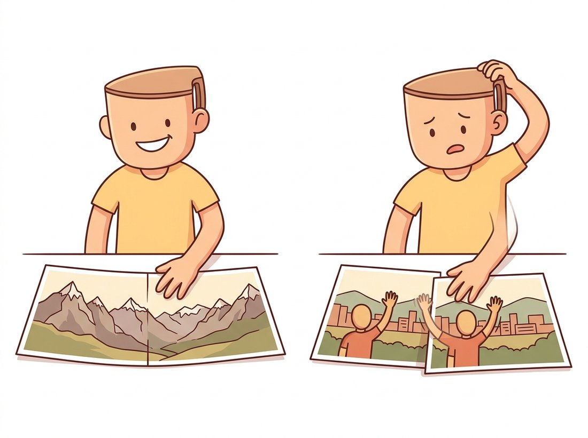

"My worldview is simple: everything is flat, or I never moved. People call that reductive. I call it nine numbers, and my panoramas look great."
A Homography With a Conveniently Flat Worldview
In two special but enormously common situations, planar scenes and rotating cameras, the point-to-line constraint of epipolar geometry sharpens into a point-to-point map: a homography, and that exactness is why panoramas work. This section derives when and why the homography holds, estimates it from four matches with the DLT (the same null-space trick as Section 13.2), and assembles the full stitching pipeline: match, fit robustly, warp, blend. Just as important is the boundary of validity: a homography applied outside its two legal cases produces parallax ghosts, and recognizing that failure separates working products from demo-day embarrassments.
The previous section flagged planar scenes and pure rotation as degeneracies that break fundamental-matrix estimation. This section flips the perspective: those "degenerate" cases are not broken geometry but stronger geometry. When the scene is a plane, or the camera only rotates, the second view is fully determined by the first, point for point, and the map between them is the projective transform you met as a pure warping tool in Chapter 5. What Chapter 5 treated as an arbitrary $3 \times 3$ warp now acquires its physics.
1. Two Roads to a Point-to-Point Map Intermediate
Why does the general two-view relation stop at point-to-line? Because depth is free: a pixel in the left image could be any point on its ray, and different depths land at different places along the right epipolar line. A homography arises whenever something removes that freedom.
Road one: the scene is a plane. If every observed point lies on a single 3D plane with unit normal $\mathbf{n}$ at distance $d$ from the left camera, then the ray of each left pixel intersects the plane at exactly one point; depth is no longer free but determined. Pushing that intersection through the right camera's projection gives a closed-form pixel-to-pixel map,
$$ H \;=\; K_R \left( R \;-\; \frac{\mathbf{t}\, \mathbf{n}^\top}{d} \right) K_L^{-1}, $$
the plane-induced homography. Facades, floors, whiteboards, documents, sports fields, and (from a drone at altitude) entire landscapes qualify as planes, which is why this case carries so much industrial weight: every document scanner and every broadcast-sports overlay is this equation at work.
Road two: the camera never translates. Set $\mathbf{t} = 0$ and the plane drops out of the formula entirely: $H = K_R \, R \, K_L^{-1}$. With no baseline, all viewing rays of both views pass through the same optical center; the two images are two croppings of the same bundle of rays, and any scene, at any depth, maps point-to-point. This is the panorama case: rotate on a tripod (or hand-hold and stay close to pure rotation) and the views stitch exactly, no matter how three-dimensional the world is. The price was paid in Section 13.1: zero baseline means zero depth information. A panorama is geometrically gorgeous and metrically empty.
Every image pair you will ever process lives on a spectrum between two models. If the views share an optical center, or the scene is effectively planar (including "far enough away that depth variation is negligible against the distance"), the homography is the correct, exact model with 8 degrees of freedom. The moment there is both real translation and real depth variation, parallax appears, no point-to-point map exists, and the fundamental matrix's point-to-line constraint is the strongest statement geometry can make. The practical model-selection rule from Section 13.2 follows: fit both, compare inlier support, and let the data declare which side of the spectrum it is on. Misclassifying the pair in either direction hurts: $F$ on rotational data is fiction, $H$ on parallax data is ghosting. The one-line handle to keep: no parallax, no depth, use H; parallax present, use F. Parallax (the relative shift between near and far points as the viewpoint moves) is the single quantity that decides which model the world will accept, and it is the same parallax that returns as the precision dial for triangulation in Section 13.6.
2. Estimating H: The Direct Linear Transform Advanced
A homography acts on homogeneous points as $\mathbf{x}' \sim H\mathbf{x}$, where $\sim$ means equality up to scale. Cross-multiplying away the unknown scale, each correspondence yields two independent linear equations in the nine entries of $H$, so four matches in general position determine it (eight equations, nine unknowns, one scale). With more matches, the same SVD null-space recipe as the eight-point algorithm applies, and the same Hartley normalization is just as mandatory; the construction is called the Direct Linear Transform (DLT). The implementation is fifteen lines:
# Direct Linear Transform for a homography: build two linear equations per
# match from x' x Hx = 0, solve the stacked system with an SVD null space,
# and confirm the from-scratch H matches OpenCV's findHomography.
import cv2
import numpy as np
def dlt_homography(src, dst):
"""H mapping src -> dst (each Nx2), via the normalized DLT."""
(s, Ts), (d, Td) = normalize_points(src), normalize_points(dst)
rows = []
for (x, y, _), (u, v, _) in zip(s, d):
# two equations per match from x' x (H x) = 0
rows.append([-x, -y, -1, 0, 0, 0, u * x, u * y, u])
rows.append([ 0, 0, 0, -x, -y, -1, v * x, v * y, v])
A = np.asarray(rows)
_, _, Vt = np.linalg.svd(A)
H = Vt[-1].reshape(3, 3)
H = np.linalg.inv(Td) @ H @ Ts # undo normalization
return H / H[2, 2]
H_ours = dlt_homography(ptsL[inl], ptsR[inl])
H_cv, _ = cv2.findHomography(ptsL[inl], ptsR[inl], 0) # 0 = plain least squares
print(np.abs(H_ours - H_cv).max()) # ~1e-6: same answerA from $\mathbf{x}' \times H\mathbf{x} = \mathbf{0}$, the SVD null vector reshapes into H, and normalize_points (reused from the eight-point implementation in Section 13.2) supplies the Hartley conditioning. The final print shows H_ours matches cv2.findHomography to about $10^{-6}$, confirming the from-scratch solve is the same computation the library runs.
As with $F$, real matches need a robust wrapper: cv2.findHomography(src, dst, cv2.USAC_MAGSAC, 3.0) runs the DLT on minimal four-point samples inside MAGSAC++, scoring inliers by reprojection distance $\lVert \mathbf{x}' - \pi(H\mathbf{x}) \rVert$, where $\pi$ is the dehomogenization. This is the very call that Chapter 10 used as its RANSAC showcase; now you know what the model means physically and when it is the right one to fit.
3. The Panorama Pipeline Intermediate
Stitching two photographs taken from one viewpoint is now a four-stage assembly of parts you already own, summarized in Figure 13.3.1: correspondences from Chapter 10, a robust homography from this section, a warp from Chapter 5, and a blend to hide the seam.
The code below stitches two images along Figure 13.3.1's path. The only genuinely new engineering is canvas management: the warped image B may land partly at negative coordinates, so the homography is composed with a translation that shifts everything into view.
# Two-image panorama stitcher: match B to A, fit the rotation-only
# homography, then warp B onto a canvas sized to hold both images
# (the warped corners can land at negative coordinates, hence the shift).
import cv2
import numpy as np
imgA = cv2.imread("pano_left.jpg") # taken rotating on one spot
imgB = cv2.imread("pano_right.jpg")
# 1-2. Match and fit H mapping B's pixels into A's frame
sift = cv2.SIFT_create()
kA, dA = sift.detectAndCompute(imgA, None)
kB, dB = sift.detectAndCompute(imgB, None)
knn = cv2.BFMatcher(cv2.NORM_L2).knnMatch(dB, dA, k=2)
good = [m for m, n in knn if m.distance < 0.75 * n.distance]
src = np.float32([kB[m.queryIdx].pt for m in good])
dst = np.float32([kA[m.trainIdx].pt for m in good])
H, mask = cv2.findHomography(src, dst, cv2.USAC_MAGSAC, 3.0)
# 3. Canvas: warp B's corners to find the bounding box of the union
hA, wA = imgA.shape[:2]; hB, wB = imgB.shape[:2]
cornersB = np.float32([[0, 0], [wB, 0], [wB, hB], [0, hB]]).reshape(-1, 1, 2)
warped = cv2.perspectiveTransform(cornersB, H)
allpts = np.vstack([warped.reshape(-1, 2),
[[0, 0], [wA, 0], [wA, hA], [0, hA]]])
x0, y0 = np.floor(allpts.min(axis=0)).astype(int)
x1, y1 = np.ceil(allpts.max(axis=0)).astype(int)
shift = np.array([[1, 0, -x0], [0, 1, -y0], [0, 0, 1]], dtype=np.float64)
# 4. Warp B, paste A, feather the overlap
pano = cv2.warpPerspective(imgB, shift @ H, (x1 - x0, y1 - y0))
pano[-y0:hA - y0, -x0:wA - x0] = imgA # hard paste; feathering below
cv2.imwrite("panorama.png", pano)
print(pano.shape, f"{int(mask.sum())} inliers") # e.g. (1184, 2693, 3) 633 inlierscv2.perspectiveTransform warps B's four corners to size the union canvas, the shift matrix is composed with H so cv2.warpPerspective places everything at non-negative coordinates, then image A is hard-pasted over its own region. The hard paste leaves the visible seam that the multi-band blending discussion below replaces.The hard paste in the last step leaves a visible seam wherever exposure differs between shots, and real stitchers blend instead. The classical answer is multi-band blending: decompose both images into the Laplacian pyramids of Chapter 4, blend low-frequency bands over wide regions (hiding exposure mismatch) and high-frequency bands over narrow ones (keeping edges crisp), then collapse the pyramid. Production stitchers add two more refinements worth knowing by name: gain compensation, a least-squares fix of per-image exposure before blending, and cylindrical or spherical projection for many-image panoramas, since chaining flat homographies across a wide field of view stretches the end images absurdly; projecting onto a cylinder first keeps the canvas bounded.
OpenCV ships the entire production pipeline behind one class: stitcher = cv2.Stitcher_create(cv2.Stitcher_PANORAMA) then status, pano = stitcher.stitch([img1, img2, img3]). Against the roughly 80 lines of the from-scratch path (plus another 60 for multi-band blending), that is a 70-to-1 reduction, and the class internally runs the full Brown-and-Lowe recipe: pairwise matching with overlap detection, robust homographies, bundle adjustment of rotations across all images, automatic wave correction (straightening the horizon), gain compensation, seam-finding with graph cuts (a cameo from Chapter 11), and multi-band blending. Check status == cv2.Stitcher_OK: the most common failure, ERR_NEED_MORE_IMGS, usually means insufficient overlap (aim for 30 to 50 percent) rather than too few photos.
4. When Panoramas Fail: Parallax Intermediate
Every homography failure in the wild is the same failure: the capture violated one of the two roads of subsection 1. Hand-held panoramas are never pure rotation; the camera's optical center translates by a few centimeters between shots. For distant scenery the resulting parallax is a fraction of a pixel and invisible. For a subject two meters away, a 5 cm translation moves near and far objects differently by many pixels, no single homography fits both, and the stitcher produces the characteristic artifacts: ghosted double edges, severed railings, a friend's arm amputated at the seam. The fix hierarchy, in increasing order of effort: rotate about the lens's no-parallax point (tripod panorama heads exist for exactly this), stand farther back, keep seams away from near objects (seam-finding does this automatically), or admit the scene is 3D and graduate to the reconstruction machinery of the rest of this chapter. The illustration below contrasts the two outcomes: flawless on flat or distant scenes, comically ghosted the moment a near subject introduces parallax.

Who: A proptech company generating 360-degree room views from a phone app, with users sweeping the camera at arm's length.
Situation: Their first version stitched the sweep with chained homographies, Stitcher-style. Marketing demos in spacious show apartments looked flawless.
Problem: In real listings, small rooms meant near walls and furniture at one to three meters. Arm's-length sweeping rotates the phone about the user's shoulder, not the lens, so the optical center translated through a 60 cm arc: massive parallax. Door frames ghosted, counter edges duplicated, and one memorable kitchen panorama featured a faucet with three spouts. One-star reviews mentioned "melted walls".
Decision: The team accepted that the capture violates the homography model and split the product. For outdoor and large-space captures, the homography stitcher stayed. For interiors, they switched to a 3D pipeline: relative pose from the essential matrix (Section 13.2), sparse triangulation, and rendering from a consistent virtual viewpoint, an early step toward the full reconstruction stack of Chapter 14.
Result: Interior artifact reports dropped by an order of magnitude; processing cost rose 6x, which the company ate as the cost of correctness. The outdoor stitcher, where the planar-or-rotational assumption genuinely holds, never changed.
Lesson: A homography is a model with a validity condition, not a general-purpose image glue. Diagnose whether your capture satisfies the condition before shipping the assumption to users who will not hold the camera the way the demo did.
5. Homographies Beyond Panoramas Beginner
The plane-induced road from subsection 1 powers a family of applications that have nothing to do with stitching, and recognizing them as "the same trick" is a mark of fluency. Document and whiteboard rectification fits $H$ from the four detected page corners to an upright rectangle and warps, the perspective correction of Chapter 5 now with automatically estimated parameters. Sports broadcasting maps the known geometry of the pitch to its image, so graphics can be painted onto the grass and player positions converted to field coordinates. Planar augmented reality tracks a poster or marker with a per-frame homography, and decomposing that homography (via cv2.decomposeHomographyMat, with $K$ known) recovers the camera's pose relative to the plane, the same pose-from-plane idea that rescued the drone mapper in Section 13.2's practical example. In every case the plane supplies the depth information a single view lacks, which is the entire lesson of this section in one sentence.
With the plane-induced homography alone you can build the scanner app every phone now ships with. Detect the four page corners (threshold, find the largest quadrilateral contour with cv2.findContours plus cv2.approxPolyDP), fit the homography that maps those corners to an upright A4 rectangle with cv2.getPerspectiveTransform, and warp with cv2.warpPerspective to flatten the perspective into a crisp top-down scan. It is the plane-rectification road of subsection 1 with the four points found automatically instead of clicked, and it is genuinely portfolio-worthy: a clean before-and-after on a skewed receipt or whiteboard photo demonstrates that you understand why the warp is exact (the page is a plane) rather than just calling a library. Extend it by feeding the deskewed output to an OCR engine, the exact pipeline behind production receipt and business-card scanners.
Research from 2023 to 2026 attacks exactly the failure mode of subsection 4. UDIS++ (ICCV 2023) performs unsupervised deep stitching that warps with a learned thin-plate spline on top of a global homography, absorbing moderate parallax that breaks the classical model, and follow-up work targets the residual misalignments with learned seam and warp-refinement networks. RecDiffusion (CVPR 2024) treats the ragged boundary of a finished panorama as a generative problem, using a diffusion model to "rectangle" the canvas instead of cropping it, a direct bridge to the generative inpainting of Chapter 35. And at the ambitious end, view-synthesis systems sidestep stitching entirely: cast the sweep as a tiny 3D reconstruction and re-render it from one virtual center using the neural and Gaussian-splatting scene representations of Chapter 27, making "panorama" a special case of novel-view synthesis. The classical homography remains the backbone in all of these; what is learned is the correction around its validity boundary.
Starting from $H = K_R (R - \mathbf{t}\mathbf{n}^\top / d) K_L^{-1}$: (a) verify that setting $\mathbf{t} = 0$ removes all dependence on the plane, and explain geometrically why that must happen; (b) holding the cameras fixed, describe what happens to $H$ as the plane's distance $d \to \infty$, and use the result to explain why distant scenery stitches well even when the photographer walks several meters between shots; (c) explain why two different planes in the same two-view setup induce two different homographies, and what a robust homography fit will report when the scene contains two dominant planes.
Extend this section's stitcher with two blending modes and compare them. (a) Feathering: weight each image by its distance transform (cv2.distanceTransform on the valid-pixel mask) and combine as a weighted average. (b) Multi-band: implement 5-level Laplacian-pyramid blending using the pyramid code of Chapter 4, with the blend mask smoothed at each level. Photograph a pair with deliberately different exposures (lock one shot against the sky, one against the ground) and show side-by-side crops of the seam region under hard paste, feathering, and multi-band. Which artifacts does each stage remove?
Build the model-selection tool this chapter keeps invoking. For a set of image pairs spanning three capture styles (tripod rotation, hand-held of a distant scene, hand-held of a near 3D scene), fit both a homography and a fundamental matrix with the same MAGSAC++ settings, and record inlier counts $n_H$ and $n_F$. Plot the ratio $n_H / n_F$ per pair, grouped by capture style. Propose a threshold for declaring a pair "homography-valid", compare it to the 0.85 ratio used by the drone team in Section 13.2, and report where your three groups separate cleanly and where they overlap. What physical property of the overlap cases explains the ambiguity?